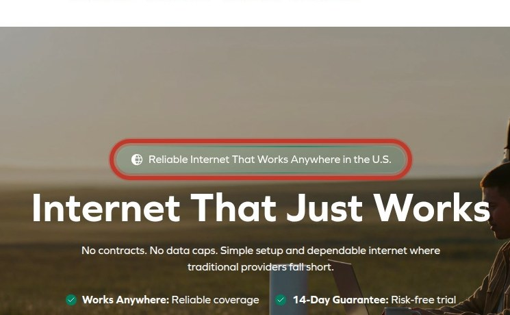
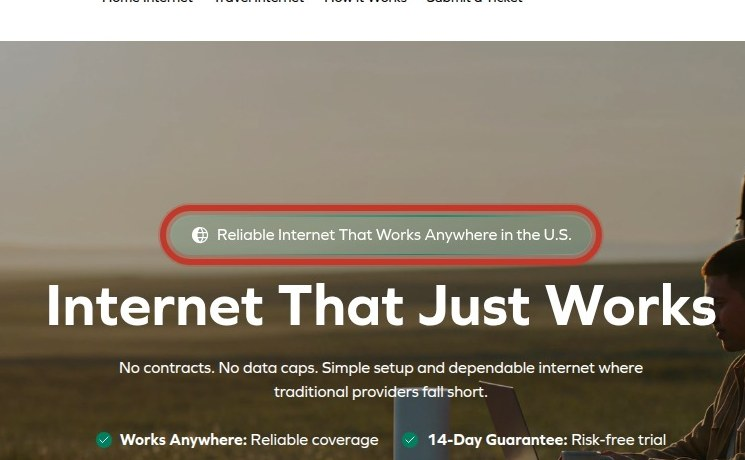
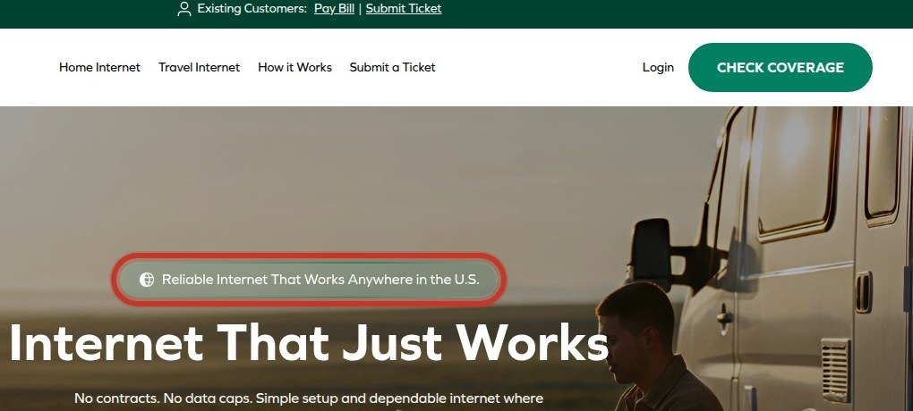

The single most valuable conversion mechanism on this site is the coverage-check CTA, which is the primary entry point for visitors to determine if the service is available at their address. This mechanism is bleeding value due to inconsistent CTA labels across the site, causing ambiguity and friction, and the site's severe performance issues (LCP of 50.8s) that cause most visitors to bounce before they can even interact with the CTA.

Lab Largest Contentful Paint of 50.8 seconds on mobile causes most visitors to bounce before seeing content.
Multiple different CTA labels for the same coverage-check action create ambiguity about the next step.

The primary headline fails to mention the unlimited data benefit, leaving a key differentiator unstated above the fold.
Lab Total Blocking Time of 3,500 ms on mobile freezes the main thread, making the page unresponsive during load.

Lab Cumulative Layout Shift of 0.265 on mobile causes layout jumps, leading to mis-taps on critical buttons.
Form fields lack visible labels, so visitors cannot tell what information is required before submitting.
Gathered from third-party reviews, forums and video — the site’s own pages are excluded. Every quote was verified word-for-word against the page it links to; anything that could not be verified was discarded rather than paraphrased.
Instead, I was hit with a surprise charge of $139 just a few months later, $40 more than expected, without any prior notice given that my rate was going up.
they claimed the extra charge was for renting the router, which was never disclosed in the beginning and they never informed me about the significant rate increase.
The official cancellation process could not be completed without the modem model and serial number, which meant I still had an unresolved situation.
The worst service..impossible to talk to human support..all chat and text doesn't get anything solved.
they double-charged me with no refund despite multiple attempts.
After a few good months, the service started dropping constantly20+ times a day.
Each surface starts at 100. The worst issue costs its full penalty — Urgent 25, High 12, Medium 5 — and each further issue costs 30% less than the one before, because the fifth problem on a page does not damage it as much as the first.
| Surface | Urgent | High | Score | Grade |
|---|---|---|---|---|
| Performance | 1 | 2 | 61 | D |
| Pricing & Plans | 0 | 5 | 74 | C |
| Homepage | 0 | 2 | 80 | B |
Grades: A 90+, B 80+, C 70+, D 60+, F below 60.
The sum of every finding's individual range. Each row is traffic × conversion × assumed lift band × order value:
| Finding | Lift band | Range |
|---|---|---|
| Lab LCP 50.8s mobile | 2.0–8.0% | 0.4–1.6/1k |
| Conflicting coverage CTAs | 1.0–5.0% | 0.2–1.0/1k |
| Headline omits unlimited promise | 1.0–5.0% | 0.2–1.0/1k |
| Lab TBT 3500ms mobile | 1.0–5.0% | 0.2–1.0/1k |
| Lab CLS 0.265 mobile | 1.0–5.0% | 0.2–1.0/1k |
| Unlabeled form fields | 1.0–5.0% | 0.2–1.0/1k |
| Inconsistent price formatting | 1.0–5.0% | 0.2–1.0/1k |
| Duplicate form submissions | 0.5–2.0% | 0.1–0.4/1k |
| Value prop buried under questions | 0.5–2.0% | 0.1–0.4/1k |
| Duplicate H1s dilute focus | 0.5–2.0% | 0.1–0.4/1k |
No traffic or order-value figures were supplied, so the total is a per-1,000-visitor rate against an assumed 2% baseline. Supply real figures and this becomes a dollar range.
Caveat that applies to every row: Across 127,000 experiments, 12% produced a statistically significant improvement on the primary metric; a healthy programme win rate is 10-30%. These are prizes if changes work, not forecasts.
A verified finding was measured directly — real-user field data, security headers, accessibility defects counted in the markup — and is reproducible by anyone. Everything else is expert inspection: valuable, but a hypothesis until tested.